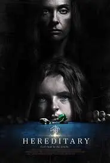
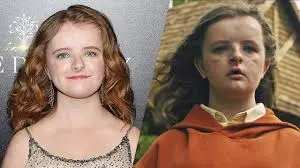
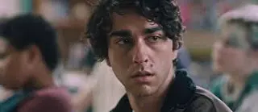
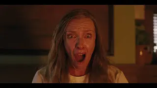
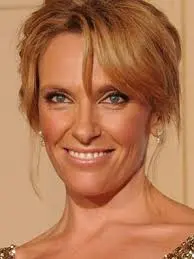
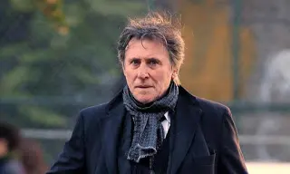

Hereditary - Le radici del male (2018) recensione

Hereditary, Dunque, partiamo dal cast: La bambina Charlie interpretata dall'attrice Milly Shapiro.

Hereditary - Le radici del male
Ora, io non sono solita mentire sulle bellezze e nemmeno prendere di mira, ma in questo caso devo essere del tutto sincera.
L'attrice già di per sé non è tutta questa bellezza naturale. Nel film l'hanno anche truccata piuttosto male.
Forse era proprio quello l'intento, di attirare l'attenzione già dal primo sguardo.
Il problema è che dall'inizio del film io pensavo, e mi aspettavo, che fosse tutto concentrato su una qualche malattia della bambina.
Poiché dal makeup forse, ha tutta l'aria di essere una bambina con problemi.
Quindi non so dirvi il perché il mio subconscio si aspettava un qualche retroscena.
Ma alla fine la somiglianza ad una qualsiasi forma di malattia non c'entra nulla con il film.
Il fratello Peter, interpretato dall'attore Alex Wolff.

Devo dire che hanno scelto proprio bene gli attori se l'obiettivo era la bruttezza. In effetti anche il fratello non è tutta questa bellezza.
La madre Anne, interpretata dall'attrice Toni Collette.

Sembra essere una bella donna ma cambia aspetto spesso.
Ovvero, a tratti sembra essere carina, a tratti invece ha un viso inquietante. Ma capisco che è tutta opera del personaggio che deve interpretare.
Anche perché l'attrice vera, a differenza della ragazza, è una bellissima donna.

Il marito Steve, interpretato dall'attore Gabriel Byrne sembra essere l'unico che resta fedele all'attore in persona ahahah.


Mettendo da parte la bellezza degli altri, il film sinceramente trovo che sia poco chiaro. Trovo che non debba essere per niente collocato nella categoria horror in quanto ha ben poco di horror.
Ecco, l'unica cosa horror a mio dire, sono i volti degli attori.
Inizialmente si presenta anche bene, ma via via perde di originalità ma soprattutto di qualità.
È molto più appassionante il trailer che il film, vi ho detto tutto!.
Aggiungo che finché si muove in un ambito familiare ok, ci sta anche, perché crea suspance e intrigo. Ma quando poi inizia a girare il discorso sul paranormale ed esce fuori con la storia di un Re demone e tutto ciò che ne concerne; lì finisce per toppare.
SE ANCORA DOVETE VEDERLO, NON CONTINUATE A LEGGERE CHE C'È SPOILER.
Dunque, nella prima parte dove c'è la morte di Charlie ed il modo in cui muore, con l'inquadratura del povero ragazzo sfigato che gli succedono tutte a lui e il primo piano che resiste fino a quando intervengono le urla stazianti della madre, è un film che promette bene.
Poi però viene tutto sgretolato quando entra in scena la medium e quello che doveva essere un 'paranormale'.
Da qui in poi infatti, ci sono una serie di scene che sembrano messe lì per impressionare. Ma con scarsi risultati.
Ad un tratto vediamo scene con il più vasto repertorio di scene horror ovvero: insetti, gente che 'dovrebbe camminare sui muri' ma invece mi sa che questo effetto speciale non è tanto riuscito perchè più che camminare sembra fluttuare.
Io credo abbiano sbagliato ad unire gli ingrippi familiari con la storia del paranormale e della setta del perchè ha solo confuso, senza senso, la trama. L'unica cosa che mi sono detta alla fine del film è starà 'perchè? ', 'perchè la nonna aveva questo ingrippo con il re dell'inferno tanto da creare una setta?'. Insomma, un film che lascia molti dubbi. Una trama caotica è il mio giudizio.
TRAMA:
Ellen Graham muore insieme ai suoi misteri. Mentre la figlia Anne elabora il lutto di una complicata figura materna, nella casa dei Graham avvengono strani episodi, che sembrano presagire un epilogo tragico. Basta un movimento di macchina, lento e avvolgente, tra i sinistri diorami assemblati dalla protagonista Anne Graham per far capire a cosa andremo incontro con Hereditary. A un dramma angosciante sui traumi di una famiglia di rara disfunzionalità e insieme a un ambizioso debutto, che guarda ai maestri del passato per generare nuovi shock.